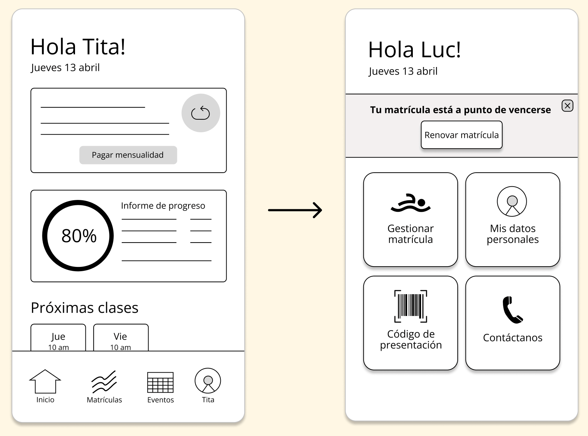

Aqualab app
Problem
Having to wait in line at Aqualab's reception to perform monthly administrative tasks causes increased stress in swimmers because of unpredictable city traffic.
Solution
A mobile app that allows users to perform basic and recurring administrative tasks regarding their pool membership online.
Research
Swimmers in my group average 2 hours away from home for a 1-hour practice. Additional visits to the pool reception are a source of stress every month.
I interviewed a total of 21 Aqualab swimmers from April 18th to April 25th and asked them questions like:
I learned that swimmers were already taking precautions not to arrive late to their next stop. The problem is not having time to go to practice and reception back-to-back.
“I have exactly 2 hours to swim, shower and eat. If something gets added in that routine, something else has to be sacrificed”
Insights
- Focus should be on eliminating the need to be at pool facilities for reasons other than practice. Additional time at the pool forces swimmers into a dilemma: sacrifice swim time or calling in late.
- Swimmers generally go to reception for 2 reasons: to renew their monthly memberships and to modify it. To get information, they usually call.
User Personas
What's more, swimmers were experiencing stress from different perspectives. By developing user personas, I was able to identify pain points within each scenario.
Ideation & design
A brainstorming session resulted in one clear solution: a mobile app where users can renew, modify and pay for their monthly membership.
-
It has to be mobile-first: according to a recent survey led by Zendesk, 63% of Peruvians use their smartphones as their primary computer.
-
Aqualab's sole direct competitor, Regatas Lima, offers access to a similar app. However they don't operate in the same districts and this alone is not enough push swimmers over to the more expensive Regatas Lima.
With this in mind, I created ideal user journey maps based on how Aqualab app would work and its user experience, capturing the user's emotions at each stage.
From here I could decide what features were important to have. I then designed a sitemap around these conclusions and started drawing wireframes and making prototypes.
Testing & iteration
To make sure I was headed in the right direction, I shared my prototype to 5 people (of whom 3 were Aqualab swimmers) for some usability testing. Here's a summary of their feedback:
-
🔣 Inconsistent iconography.
"What does this pencil do? How do I delete a class? Why doesn't this button click?"
-
🛸 Unclear navigation.
"I don't know where I need to go do renew my membership", "There are some repetitive steps."
-
🔮 Ambiguous language.
"What's the difference between programme, services, class and membership?"
Based on this feedback, I went back to the drawing board and:
-
Removed bottom navigation.
I decided to let the users flow back and forth via a back button and a close button.
-
Used clear language and iconography.
I used wording that is currently used by Aqualab. For example, matrícula is used for a user's membership and clase is a swim practice. I also removed all ambiguous icons and prioritized buttons with text.
 -
Removed clutter.
Users were facing decision paralysis: too many options and sections with irrelevant information.
I updated the sitemap based on the feedback I'd received, re-prioritizing the features important to the personas and focused on simplifying the user journey.
Final solution